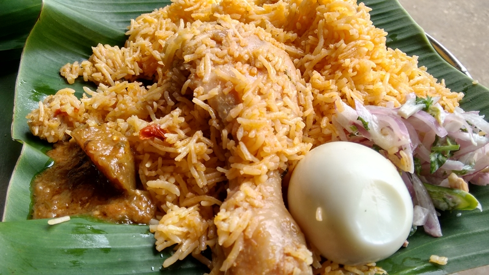

Chicken Biryani

Description
Chicken biryani is a delicious Indian rice dish that's typically reserved for special occasions such as
weddings, parties, or holidays such as Ramadan. It has a lengthy preparation, but the work is definitely worth
it. For biryani, basmati rice is the ideal variety to use.
Ingredients
- Basmati rice – 1kg
- Chicken – 1kg
- Oil – 200ml
- Onion – 400gm (medium sized – 6)
- Tomato – 400gm (medium sized – 6)
- Cinnamon – 1gm
- Cardamom – 1gm
- Clove – 1gm
- Coriander Leaves – half hand
- Mint Leaves – half hand
- Ginger – 100gm
- Garlic – 50gm
- Red Chili powder – 2 tablespoon (preferably choose “Shakti chili powder” or “Aachi Kashmiri chili powder” –
to obtain good colour in biryani without using any other external colouring agent)
- Salt – 2 tablespoon
- Curd – 200ml
- Green Chili – 3
- Water – 1.3 litre
- Lemon – 1/2
Steps
- Rinse 1 kg of basmati rice softly in clean water. Repeat it again to clean it fully and then soak it in a
bowl with fresh water. Keep it aside. Also clean 1 kg of chicken in water and keep it aside to dry.
- Take a suitable vessel that can cook 1kg rice and 1 kg meat. Place it on the big burner. (prefer 5 litres
vessel so that there is no spill over while cooking)
- Add 400gms of thinly sliced onions in the vessel and pour in 200g cooking oil to fry the content. (prefer
rice bran oil, palm oil, ground nut or refined sunflower oil).
Add 1 gram each of cinnamon,cardamom and cloves to it.
- Fry the contents in high flame until the colour of onion becomes reddish-brown. Frying onion to reddish
brown will give good flavor and taste to the biryani.
Once onion become reddish brown, turn the stove to low-flame and add each handful of coriander leaves and
mint leaves to the pan. Stir for 10 seconds. The mint and coriander leaves give good aroma to the biryani
and will last throughout cooking.
Take 100g of peeled ginger and 50g of garlic, grind them until it becomes paste. Add this ginger-garlic
paste and stir it for 10 seconds.
Ginger-garlic paste is one of the main ingredients which gives rich taste and flavor to the biryani.
- Add 2 tablespoons of red chili powder and then 3 green chilies and stir well for 10 seconds. The secret
behind adding chili powder is that it will mix well in oil and give good colour to the biryani so that no
additional colouring agent required. Reducing number of green chillies and replacing it with some additional
red chilli powder will give good colour to the biryani
- Now, add 200ml of curd. Stir the content well for 10 seconds.
- Add 400g of sliced tomatoes. Stir fry it for at least 5 minutes in high flame.
- (Irrespective of the quantity of biryani, the ratio of the tomato and onion should be the same.)
- (After 5 minutes of stir-frying tomatoes) add 2 table spoons of iodized salt.
- Add 1.3 liters of water (1 liter + 300 ml). Just stir all the contents gently for 10 seconds.
Important: Please make sure to measure and add the right amount of water.
- Close the vessel using a lid, keep the flame in HIGH and allow the water to boil (for approximately 2
minutes). Then make sure to keep the flame in LOW and let the water boil for another 5 to 6 minutes.
Remove the lid and add the cleaned chicken (1 Kg). If we feel a need for more chicken then we can add
chicken up to 1.5 kgs also.
- After adding chicken, close the lid, keep the flame in high and allow it to boil for exactly 2 minutes.
Now, remove the lid and gently stir the contents for 10 seconds.
It’s time to add the already cleaned 1 kg of rice to the contents in vessel.
After adding rice, stir gently so that the rice and meat and masala all mix well.
Make sure to stir gently so that the meat pieces or the basmati rice doesn’t break.
- Close the vessel with a lid, keep flame in high and allow the contents to boil for approximately 1 minute.
After 1 minute, remove the lid, and once again stir the contents from the bottom of vessel to mix the
contents well.
- Now it’s time to check for saltness, sourness and spiciness. Please check and add extra salt or extra chili
powder as needed. Tomatoes and curd will give the required sourness but if you feel the need for more
sourness, squeeze the juice of half lemon.
- Stir gently in the middle of vessel for 10 seconds. Then check to make sure that the rice and meat pieces
are all under water. Now, close the vessel with lid. (Make sure that the lid is tightly closed by keeping a
weight on the lid also make sure no steam comes out.) Keep the flame to low (simmer).
- Allow the contents to boil for 15 minutes in low flame with the lids tightly closed.
- After 15 minutes, remove the lid, check if the water is completely dried till the bottom. If still water is
there, we can again close the lid and let it boil for another 1 or 2 minutes.
Off the flames and your most awaited dum biryani is ready.
- Serve the dish and get the accolades!!!
Serving Suggestion
Chicken Dum Biryani can be served along with Onion Raitha, Brinjal Chutney and sweets!!!